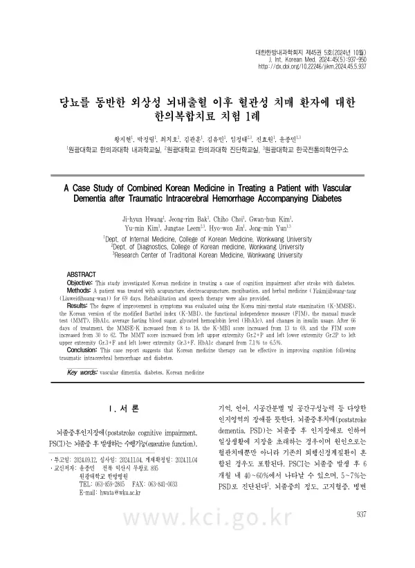

A Case Study of Combined Korean Medicine in Treating a Patient with Vascular Dementia after Traumatic Intracerebral Hemorrhage Accompanying Diabetes
Hwang Jh, Bak Jr, Choi C, Kim Gh, Kim Ym, Leem J, Jin Hw, Yun Jm
The Journal of Internal Korean Medicine 45(5):937-950

첫 장 · 오픈액세스First page · open access
논문 소개Summary
낙상으로 외상성 뇌내출혈을 겪은 뒤 혈관성 치매가 온 78세 여성의 증례입니다. 이 환자는 뇌출혈 치료 중 당뇨병성 케톤산증까지 나타나 혈당 관리에 어려움을 겪던 상태였습니다. 69일간 입원해 침·전침·뜸과 육미지황탕 가미방을 쓰고 재활치료와 언어치료를 함께 받았습니다. 인지는 MMSE-K가 8점에서 18점으로, 한국판 수정바델지수가 13점에서 69점으로, 기능적 독립성 측정이 30점에서 62점으로 올랐고 당화혈색소는 7.1%에서 6.5%로 내려갔습니다. 인지저하와 혈당을 함께 평가한 한의 증례가 없었다는 점에 뜻이 있으나, 단일 증례이고 대조군이 없어 자연경과와 병행 치료의 몫을 가릴 수 없습니다.
A case report of a 78-year-old woman who developed vascular dementia after traumatic intracerebral haemorrhage from a fall, and whose blood glucose had become difficult to control after diabetic ketoacidosis arose during treatment of the haemorrhage. Over 69 days as an inpatient she received acupuncture, electroacupuncture, moxibustion and a modified Yukmijihwang-tang, alongside rehabilitation and speech therapy. Cognition on the MMSE-K rose from 8 to 18, the Korean version of the modified Barthel index from 13 to 69, and the functional independence measure from 30 to 62, while glycated haemoglobin fell from 7.1% to 6.5%. The report matters because no previous Korean medicine case had assessed cognitive decline and glycaemic control together, but with a single case and no control group, natural recovery and the concurrent therapies cannot be separated out.
인용Cite
Hwang Jh, Bak Jr, Choi C, Kim Gh, Kim Ym, Leem J, Jin Hw, Yun Jm. A Case Study of Combined Korean Medicine in Treating a Patient with Vascular Dementia after Traumatic Intracerebral Hemorrhage Accompanying Diabetes. The Journal of Internal Korean Medicine. 2024;45(5):937-950. doi:10.22246/jikm.2024.45.5.937